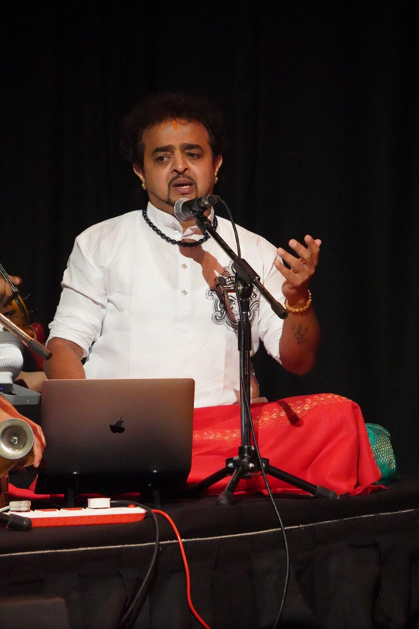
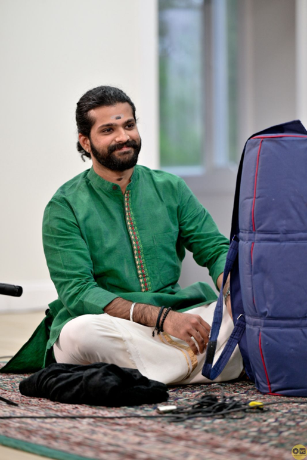
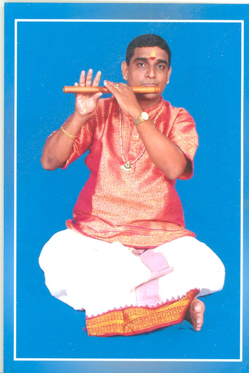
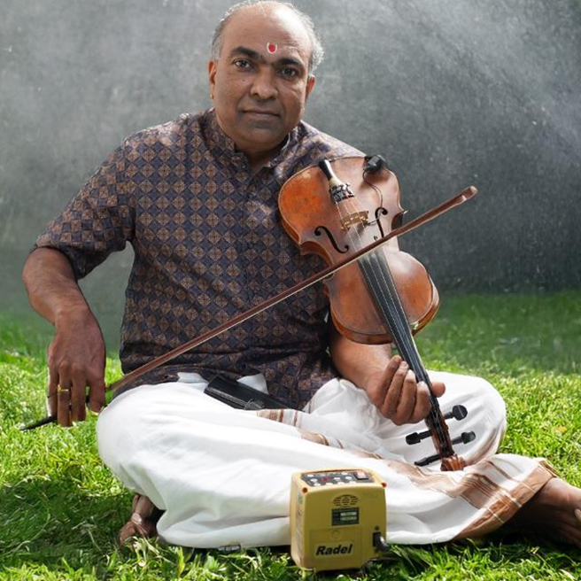

Our Artists
Renowned Musicians & Performers

Ananth Vikram
Vocalist & Classical Dancer
Ananth Vikram is a versatile Indian artist of international repute, known for his work in vocals, Bharatanatyam, Kuchipudi, acting, Kalaripayattu, and recording performance. He has also been leading his organization, Shailusham Arts & Creations (R), for the past 18 years.
He serves as an esteemed jury judge on Zee TV Sa Re Ga Ma Pa and has been associated with the show for the past four years. Ananth Vikram has travelled extensively across 18 states in the United States, London and other parts of Europe, South East Asia, and Africa, presenting multilingual film music concerts widely known as Ananth Vikram Live-in Concert, alongside classical performances, music and dance workshops, lecture demonstrations, motivational speeches, public shows, and dance presentations.
His international engagements include exclusive music and dance workshops in Denmark, where he also performed at the Indian Embassy on the occasion of Indian Independence Day. He has additionally performed in Lagos, Nigeria; Vietnam; Papua New Guinea; and Istanbul, Turkiye, among other destinations.
In addition to stage performance, he renders vocals and nattuvangam for Bharatanatyam and Kuchipudi arangetrams, and offers advanced training and guest lectures for music professionals in the Carnatic music field. He is also an empaneled artist recognized by the Ministry of Culture, Government of India, under the Festivals in Abroad Scheme.
So far, Ananth Vikram has presented more than 1,200 performances worldwide across both music and dance.

Suriya Nambisan
Mridangam Artist
Suriya Nambisan, a talented Mridangam artist, is the senior most disciple of Kalaimamani Sri Tiruvarur Vaidyanathan. He began his musical journey at the tender age of 6.
An "A" Graded artist of All India Radio, Suriya has accompanied several distinguished musicians. Expanding his musical horizons, he collaborated with world-renowned cellist Diego Carneiro as part of the Symphony of Peace project, a unique cross-cultural initiative.
Suriya is also a sought-after accompanist for dance, having worked with eminent dancers. He has performed extensively across India and the United States, earning acclaim for his nuanced artistry and sensitivity as an accompanist.
Suriya's talent and dedication have been recognized with several prestigious awards, including:
- Meera & T.K. Subramaniam Memorial Award – Cleveland Thyagaraja Festival
- "Laya Kala Mamani" by Nanganallur Sabha
- Title of "Sangeetha Mudhra" – Mudhra Fine Arts
- Bharat Ratna M.S. Subbulakshmi Fellowship Award – Shri Shanmukhananda Sangeeth Sabha, Mumbai
- Best Concert Award – The Madras Music Academy
- Title of "Asthana Vidwan" – Sri Chakra Maha Meru Peetam

Sri Chittoor K. Pathanjali
Carnatic Flute Vidwan
Sri Chittoor K. Pathanjali is a distinguished Carnatic flute vidwan belonging to a revered lineage of musicians known for their scholarship and service to classical music.
He was initiated into the art of woodwind music at a young age by his grandfather, the eminent violin maestro and Mahaguru Kalaimamani Sri Chittoor Gopalakrishnan, whose guidance laid a strong foundation in manodharma and classical aesthetics. He also received sustained musical inspiration and training from his father, Sri Chittoor G. Kumaresan, an accomplished and accredited violin and viola artist.
A musician of deep classical grounding and refined artistry, Sri Pathanjali has been honoured with the distinction of Asthana Vidwan of Sri Kanchi Kamakoti Peetam, in recognition of his vidwat, discipline, and adherence to sampradaya. He is also a recipient of the CCRT Scholarship from the Government of India, New Delhi, and has been honoured by the Government of Tamil Nadu for his contributions to Carnatic music.
Sri Pathanjali has performed extensively on prestigious platforms such as All India Radio and Doordarshan, in addition to numerous leading sabhas and cultural institutions across India. His academic service includes serving as a part-time faculty member in the Department of Music, University of Madras, where he contributed to nurturing young aspirants.
In addition to his performing career, he is a prolific composer and vaggeyakara, best known for the celebrated Kamakshi Nava Ragamalika, which reflects his command over raga lakshana, lyrical depth, and aesthetic sensitivity. As a dedicated guru, he continues the guru-shishya parampara by mentoring more than one hundred disciples, many of whom are active performers.
Sri Pathanjali has also carried the rich traditions of Carnatic flute music to audiences abroad through concert tours in the United States of America, Canada, Mexico, and the United Arab Emirates, earning appreciation from rasikas and scholars alike.

Melakaveri K. Thiagarajan
Violin Artiste
Melakaveri K. Thiagarajan is a Chennai-based violin artiste with about 35 years of experience as a performing musician and a B-High graded violin artist of All India Radio, Chennai.
Born on 17 June 1972 to Melakaveri (Late) Sri K. Krishnamurthy, a mridangam artiste, and Smt. Vijayalakshmi, he began his violin training under (Late) Dr. Mrs. K. R. Karpagam in R. R. Sabha, Mylapore, continued under (Late) Ramanathapuram Sri Venkatachalam Iyer, and has also trained under Sri V. L. Kumar of All India Radio.
He has performed in leading sabhas including Narada Gana Sabha and Music Academy, and has accompanied many senior and emerging Carnatic musicians as well as noted Thevaram and Thiruppugazh stalwarts such as Dharmapuram Sri Swaminathan, Thirutani Sri Swaminathan, and Lalgudi Sri Swaminathan in India and abroad.
His international performance travels include accompanying artistes such as Smt. Nithyasree Mahadevan in the U.K. and Sri Lanka, Sri O. S. Arun in the U.S.A. and Zambia, Smt. Geetha Rajasekar in Dubai and Abu Dhabi, Lalgudi Sri Swaminathan in Bangkok, Thirutani Sri Swaminathan in South Africa, Malaysia, and Singapore, and Smt. Anuradha Krishnamurthy in Australia. He was also honoured to accompany Smt. Vasumathi Badrinath at the "Space of Mugam" International Music Festival in Baku in 2008 under the auspices of the Government of Azerbaijan.
His recognitions include Best Violinist from Mylapore Fine Arts, Sri Krishna Gana Sabha, and Tamilnadu Iyal Isai Nataka Sangam; Nadha Isai Selvar; Yuva Kala Bharathi; Isai Thendral; Asthana Vidwan of Kanchi Kamakoti Peetam; Dasa Kala Mani; and Sadguru Seva Praveena.